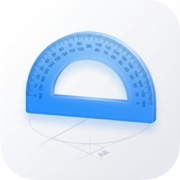

0
°
✓
✓
각도:
°
일반
단축키 안내
×
M
일반 / 각도설정 모드 전환
R
중심점 리셋
F
각도기 눈금 켜기/끄기
;
기울기 지시선 켜기/끄기
V
수직선 켜기/끄기
/
전후면 카메라 전환
[ ]
카메라 축소 / 확대
W, A, S, D
중심점 이동 (Shift: 빠르게)
. ,
각도 조절 (+1, -1)
> <
각도 조절 (+10, -10)
0-9
각도 즉시 설정 (10~50, -10~-50)
E
ESP32 서보 연결 설정
📡 ESP32 서보 연결
×
●
연결 안됨
연결 방법
ESP32에 아두이노 코드 업로드
기기 WiFi 설정에서 연결:
SSID:
Protractor-Servo
비밀번호:
12345678
아래 연결 버튼 클릭
⚠️
HTTPS 보안 제한
이 페이지가 HTTPS로 로드되어 ESP32(HTTP)에 직접 연결할 수 없습니다.
📡 ESP32 직접 접속하기
연결 테스트
연결 해제

홈 화면에 추가하기
공유 버튼 → "홈 화면에 추가" 선택
×
앱 설치